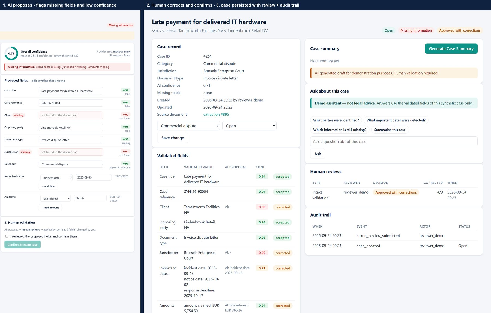
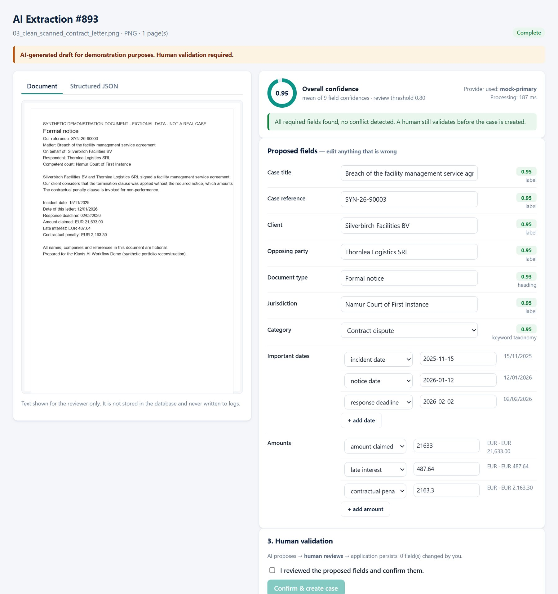
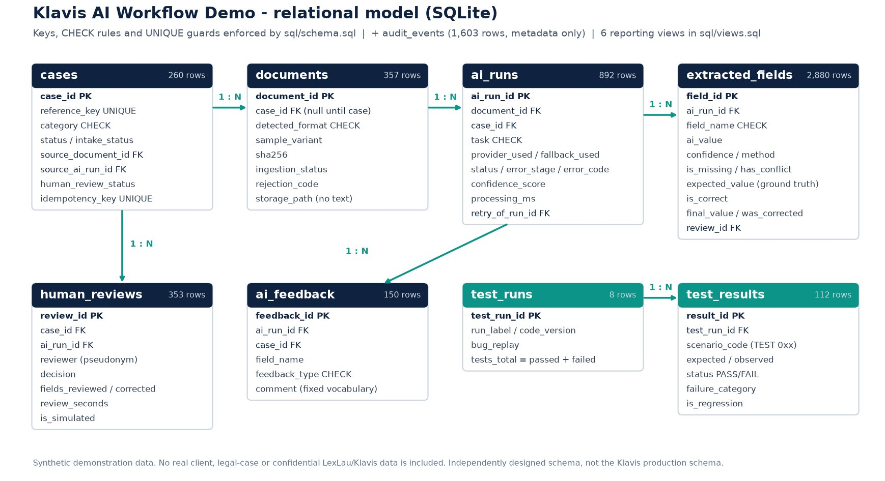
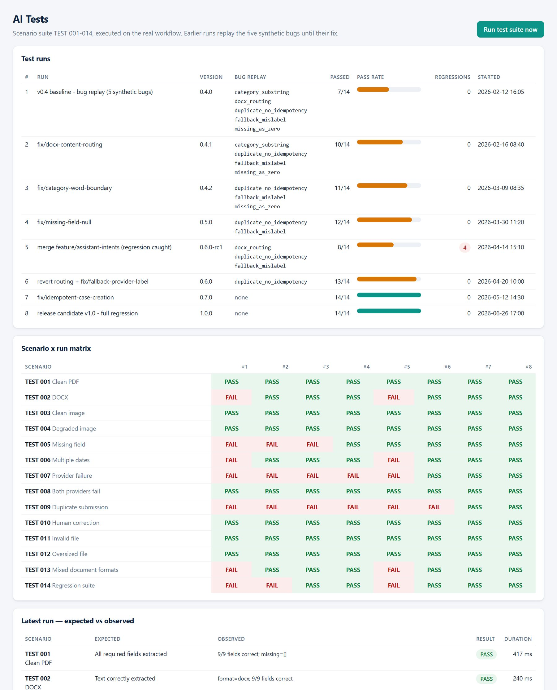
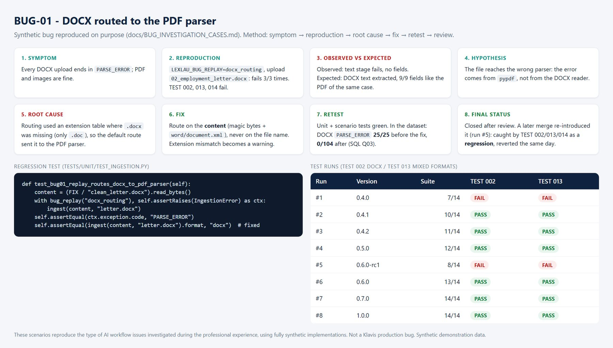
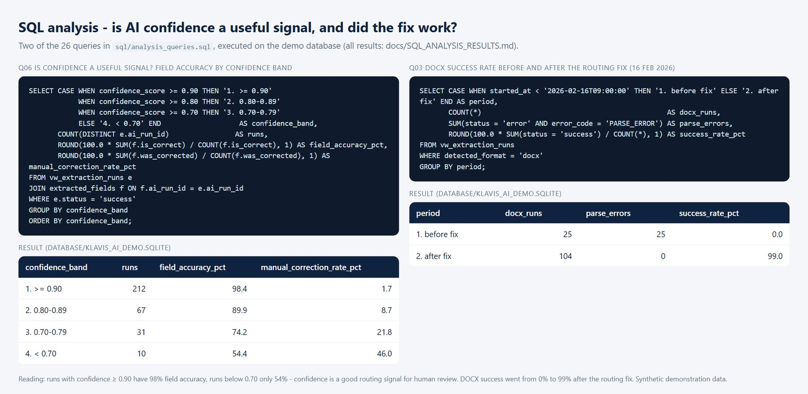
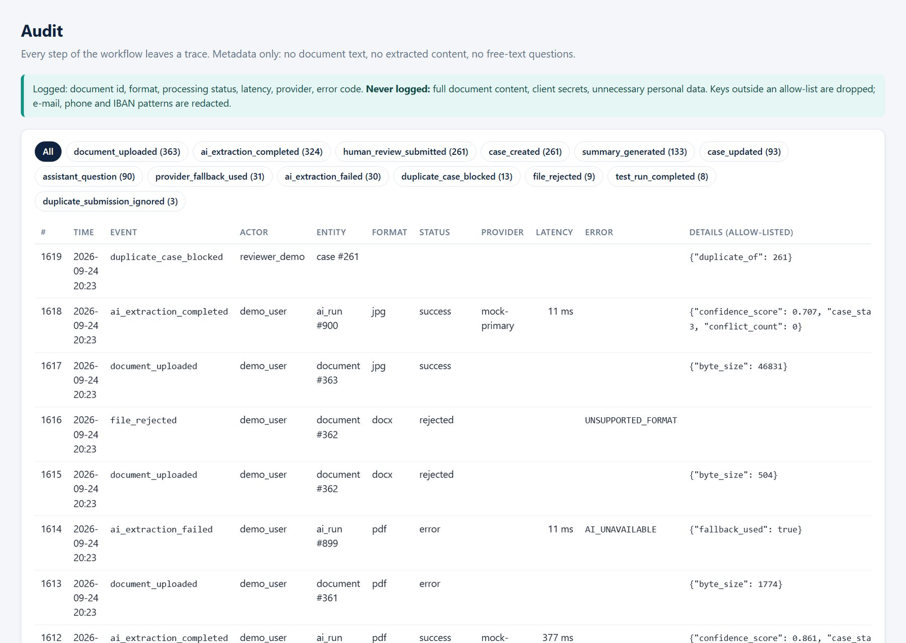

Case study · AI workflows / Data / QA
LexLau / Klavis.app
AI-Assisted Legal Case Management
“Testing and improving AI-enabled workflows that transform legal documents into structured, reviewable case information.”
Professional experience under technical supervision. Public reconstruction uses fully synthetic data.
Synthetic dataSynthetic demonstration data. No real client, legal-case or confidential LexLau/Klavis data is included. The public project is an independent reconstruction, not a copy of Klavis code.
AI WorkflowsData AnalysisTestingQASQLPythonData QualityProduct FeedbackHuman-in-the-loop
01 · Context
A legal application with many AI features, and a team that needed them to be reliable.
Klavis.app / KlavIA, developed by LexLau, is a legal case-management application that uses AI across its workflows. As an AI Engineer & Data Analyst intern, I worked inside this environment under the supervision of the CTO.
My work was on the reliability side: testing AI features systematically, structuring and analysing the data used by the workflows, reproducing bugs, documenting expected versus actual behaviour and turning the results into product and technical feedback, while handling potentially confidential data.
Because that work is confidential, this case study shows a public reconstruction: the same kind of workflow, rebuilt from scratch with synthetic documents and an independent architecture.
02 · Business / product problem
Extracting information is easy to demo. Doing it reliably is the real problem.
Legal professionals work with documents full of structured and unstructured information. Manual extraction is time-consuming and error-prone.
AI can speed up this workflow, but incorrect extraction, missing fields or unreliable behaviour create real operational risk. So the challenge is not simply “Can AI extract information?”
Can the workflow produce structured information reliably enough for a professional to review and use?
03 · My role
What I did at LexLau, and what I rebuilt publicly.
I contributed to the development, testing and improvement of AI-enabled workflows within Klavis, as a contributor within the team, with technical review and supervision from the CTO.
Real professional experience · LexLau
- AI-enabled application testing
- Data analysis and structuring
- AI workflow validation
- Bug reproduction
- Documentation
- Product / technical feedback
- Confidential-data awareness
- Work under CTO / technical supervision
The public project is a reconstruction designed to demonstrate the workflow without exposing LexLau/Klavis intellectual property or confidential client information.
04 · Working under technical supervision
A change was not finished because it worked on my machine.
- Changes were made under technical supervision, on branches, through Merge Requests.
- Problems were documented: what was observed, how to reproduce it, what was expected.
- Corrections were reviewed by the supervisor. I did not approve my own changes.
- Tests could be replayed, and results, including failures, were reported to the supervisor.
The public repository simulates this discipline with a feature-branch test report, a QA checklist for the author, a review checklist for someone else and a final validation step. The test history shows why the last step matters: a merge re-introduced a fixed bug, and the regression suite caught it.
- Issue
- Reproduction
- Analysis
- Implementation
- Automated tests
- Manual tests
- Review
- Retest
- Closure
05 · AI workflow
AI proposes, a human reviews, the application persists.
- Document arrives
- Application extracts the text
- AI structures the information
- System checks the fields
- Human reviews and corrects
- Case is created
- AI assists with the case
- Tests measure reliability
- Failures are investigated
- Product feedback improves the workflow
AI stepHuman stepSystem / quality step
Provider abstraction: a deterministic local engine by default (no API key), a simpler fallback engine, optional OpenAI / Anthropic providers through environment variables. If the primary fails, the fallback answers; if both fail, the user gets a structured error and nothing is saved.
06 · Document processing
PDF, DOCX and images, in the states real documents arrive in.
| Format | How the text is read | Variants |
|---|---|---|
| Text layer (pypdf) | clean · degraded · multi-page · missing fields · contradictory | |
| DOCX | Document XML | clean · missing fields · contradictory |
| PNG / JPG | Simulated OCR text layer | clean · degraded photo (rotated, blurred, noisy) |
The format is detected from the file content, not its name. Empty, oversized (over 5 MB) and unsupported files are rejected before any AI call.
07 · Structured data
From a noisy photo to a JSON a reviewer can check.
Nine fields are scored against the ground truth: title, reference, client, opposing party, document type, jurisdiction, labelled dates, labelled amounts and category. Each field keeps its value, its confidence, how it was found, and whether it is missing or conflicting.
Real output for the degraded phone photo sample: the missing values stay null. They are never guessed and never set to zero.
{
"case_title": "Late payment for delivered IT hardware",
"case_reference": "SYN-26-90004",
"client_name": null,
"opposing_party": "Lindenbrook Retail NV",
"document_type": "Invoice dispute letter",
"jurisdiction": null,
"important_dates": [{"label": "incident_date", "date": "2025-09-13"}],
"amounts": [{"label": "late_interest", "value": 366.26}],
"case_category": "Commercial dispute",
"case_status": "Missing Information",
"missing_fields": ["client_name", "jurisdiction", "amounts"],
"confidence_score": 0.707
}
08 · Human-in-the-loop
The AI never creates a case on its own.
- The reviewer sees every field with its confidence; missing fields in red, conflicts in amber.
- Any field can be corrected; the category is a suggestion.
- The case is created only after an explicit confirmation, and the API refuses it otherwise.
- Each correction is stored per field and becomes product feedback.
Mandatory labels: “AI-generated draft for demonstration purposes. Human validation required.” and “Demo assistant — not legal advice.”

09 · Testing approach
Fourteen scenarios, and proof that they catch real problems.
Unit, integration and end-to-end tests (73, all passing) include the scenario suite TEST 001–014: clean PDF, DOCX, clean and degraded images, missing field, multiple dates, provider failure, both providers down, duplicate submission, human correction, invalid file, oversized file, mixed formats and regression. Every synthetic bug can be switched back on, and the suite has to fail when it is.
Happy paths
Every format extracts 9/9 fields on clean documents; the same case gives identical results in PDF, DOCX and PNG.
Failure paths
Timeouts, invalid provider output, both providers down, invalid and oversized files: a controlled error every time, never a crash.
History
Eight recorded runs: 7/14 → 14/14 as fixes landed, including one regression caught after a merge.
10 · Bug investigation
Symptom → reproduction → root cause → fix → retest.
These scenarios reproduce the type of AI workflow issues investigated during the professional experience, using fully synthetic implementations. They are not Klavis production bugs.
| Bug | Root cause | Fix and retest |
|---|---|---|
| DOCX not routed correctly | Routing on the file extension; “.docx” missing from the table, so files went to the PDF parser | Route on the content. DOCX parse errors: 25/25 before, 0/104 after |
| Category mismatch | Keyword “board” matched inside “cardboard” | Word-boundary matching. Category corrections: 4 before, 0 after |
| Duplicate case creation | No idempotency key, uniqueness column never filled | Two guards: 12 duplicates blocked, 0 duplicate references |
| Provider fallback problem | Fallback answers recorded under the primary provider | Record the provider that answered: the fallback rate reads 9.7% instead of 0% |
| Missing-field bug | Absent amount defaulted to 0.00, so never reported missing | Missing means null: the field is flagged and the case awaits information |
11 · Data quality
Every output is compared with what the document really says.
Each synthetic document comes with its ground truth. The comparison rules are explicit: “absent in the document and reported missing” is correct, and a field without ground truth is unknown rather than wrong.
The database enforces the rules with keys, CHECK constraints and unique guards: a case cannot be saved without a human review decision, and a test run cannot have more results than tests. Integrity checks run on every rebuild.
Degraded scans
65.5% field accuracy · reviewers correct 30–43% of fieldsClean documents
99.7% field accuracy · about 0.4% of fields corrected12 · AI quality metrics
One definition per metric, in SQL, DAX and the app.
extraction runs without error
vs ground truth
fields found when present
fields changed by reviewers
drafts flagged for review
primary failed, fallback used
mostly the DOCX bug
demonstration metric
latest suite run
latency model
Power BI report: 5 pages on the same metrics
Star schema (9 tables), 42 DAX measures. Opened in Power BI Desktop and reconciled with SQL: 85/85 comparisons match. Click a page to see it full size.
In the synthetic demonstration dataset, not Klavis figures. Key finding: runs with confidence ≥ 0.90 have 98% field accuracy, runs below 0.70 only 54%, so confidence is a usable signal to route drafts to careful review.
13 · Proof of work
Proof of work.
Screenshots of the running demo and renders of the real SQL and code. Click an image to see it full size.







14 · Data protection
Built as if the documents were real.
Minimisation
The database stores metadata and structured fields, never document text. The summary and the assistant only receive validated fields.
Controlled logging
Allow-listed keys, redaction of e-mail, phone and IBAN patterns, length caps. A test proves a canary paragraph never reaches the logs.
No secrets
Runs without any API key; only a .env.example is published. The repository scan finds 0 blocking issues.
Auditability
1,603 audit events: uploads, rejections, AI runs, fallbacks, reviews, duplicates, test runs.
Human review
No case without an explicit validation; every correction is attributable to a (pseudonymous) reviewer.
Separation
Reference dataset, disposable runtime database and one temporary database per test scenario.
15 · Technical stack
Each skill, with what I built and where to check it.
Built systematic test scenarios across PDF, DOCX and image workflows and documented failures, regressions and retest results.
→ Test suite proofStructured AI-run and extraction data to analyse success rates, completeness, confidence and manual correction.
→ Quality dashboardConverted reproducible test findings into documented technical and product feedback.
→ Bug investigationRelational schema with constraints, 6 reporting views and 26 analysis queries with window functions.
→ SQL proofProvider abstraction with fallback, document parsing, evaluation against ground truth and a standard-library API.
→ Extraction proofStar schema (9 tables), 42 DAX measures and a 5-page report, reconciled with SQL (85/85 checks).
→ Power BI report16 · Limitations
What this case study can and cannot claim.
Not claimedKlavis is LexLau’s product; I contributed to it within the team. The bugs shown are synthetic, and the metrics describe the synthetic dataset, not the production system.
- Synthetic documents are cleaner than some real-world legal documents.
- Mock AI cannot reproduce all behaviours of commercial LLMs; OCR is simulated.
- Confidence scores are demonstration metrics, not calibrated probabilities.
- The public reconstruction intentionally simplifies the original production architecture.
- The repository does not reproduce LexLau/Klavis proprietary code.
- The project demonstrates methodology and skills, not the production system itself.
17 · What I learned
“AI quality is not only about model output. Reliability also depends on document handling, structured data, validation, fallback behaviour, testing coverage and human review.”
A feature is not finished when the model returns a plausible answer. It is finished when the complete workflow behaves predictably, failures are observable and the user can safely validate the result.
18 · Technical repository
lexlau-klavis-ai-workflow-demo
View on GitHub →
Demo app (8 pages), AI layer with fallback, synthetic documents and ground truth, SQLite database with SQL analyses, 73 tests, Power BI project and DAX, bug investigations, data-protection and QA documentation. One command rebuilds everything: python run_pipeline.py.